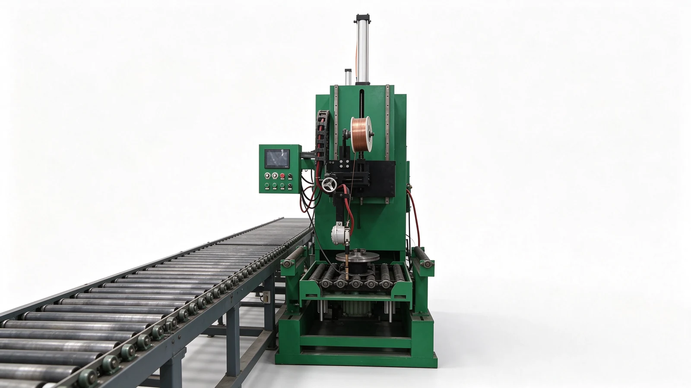
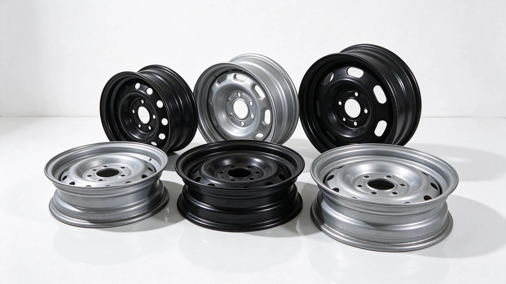

Complementary Machines
Stations that run before and after this welding machine on a rim line.
A dedicated circumferential seam welding machine for steel wheel rims. The rim is located on a servo-driven rotary table and the seam is closed by a full-penetration submerged arc weld, giving a pressure-tight, high-strength joint on rims up to 650 mm in diameter and 6-16 mm thick.
The machine is the welding station of a three-station rim line: press-fit assembly, roundness and seam inspection, then circumferential seam welding. Rims are transferred on a roller conveyor at 894 mm line height, welded, and taken off for the next operation.

Mechanical, welding and electrical data for the standard configuration. Rim diameter, thickness range and torch stroke can be customised to the rim sizes you produce.
| Rim diameter (welded) | Up to 650 mm |
| Weld type | Circumferential seam, full penetration |
| Welding process | Submerged arc welding (SAW) |
| Locating plate diameter | 281 mm |
| Torch vertical travel | 700 mm |
| Torch adjustment range | ±100 mm vertical, cross and fore-aft |
| Torch angle | 5° from vertical |
| Welding wire diameter | 1.6-2.0 mm |
| Rim rotation | Servo-driven, continuous during weld |
| Welding power source | 1,000 A inverter, air-cooled torch |
| Input power | 380 V, 50 Hz, three-phase |
| Control | PLC with touch-panel HMI and manual pushbuttons |
| Machine dimensions | 1,400 × 1,400 × 2,250 mm |
| Line height / buffer length | 894 mm / 700 mm |
* Specifications as supplied for this configuration. Final data confirmed on the proforma invoice.
Data is grouped by sub-system so your maintenance team can check each function separately.
Torch travel, adjustment and wire feed
| Torch vertical stroke | 700 mm, motorised lift with manual fine adjustment |
| Torch cross / fore-aft adjustment | ±100 mm each direction on calibrated slides |
| Torch angle setting | 5° from vertical, fixed during the weld pass |
| Wire feed | 1.6-2.0 mm wire, slow feed with anti-stick start |
| Torch cooling | Air-cooled torch body, no water circuit in the head |
| Seam coverage | Full penetration of the butted rim edge, both faces fused |
Servo drive, locating plate and lift
| Rotation drive | Servo motor with planetary reducer, closed-loop speed control |
| Locating plate | 281 mm diameter plate, rim centred on the weld axis |
| Clamping / support | Pneumatic lift table raises the rim onto the locating plate |
| Loading | Manual load and unload, roller conveyor in line at 894 mm |
| Cycle | Load, clamp, rotate and weld one full revolution, release, unload |
Inverter welding supply, PLC and HMI
| Welding power source | 1,000 A inverter, IGBT switching, stable arc at low current |
| Input | 380 V ±5 %, 50 Hz, three-phase |
| Control voltage | 380 V, protected control cabinet |
| Controller | PLC + colour touch panel, weld programme storage |
| Operator panel | Start / stop, torch jog, programme select, fault reset |
| Cable management | Drag-chain protected cabling along the torch axis |
Machine and finished workpieces in the standard configuration.

What the machine changes on a rim line, stated plainly.
The rim rotates under a fixed torch, so the whole circumference is welded in a single pass without a start-stop overlap.
Full-penetration submerged arc welding fuses both rim faces, giving an air-tight seam that holds inflation pressure.
Torch stroke of 700 mm and ±100 mm adjustment cover a wide range of rim widths and diameters on one setting.
894 mm line height, roller conveyor interface and 700 mm buffer let the machine drop into a rim line without re-layout.
Torch, wire spool and locating plate are all reachable from the operator side; the control cabinet is separate.
Submerged arc welding uses standard 1.6-2.0 mm wire and granular flux, with no shielding gas consumption.
Where this welding station is used in steel wheel production.
Site data needed before the machine is quoted for your plant.
| Line height | 894 mm conveyor pass line, adjustable feet |
| Machine footprint | 1,400 × 1,400 mm, 2,250 mm overall height |
| Space between stations | 500 mm minimum between machine frames |
| Operator space | 1,500 mm working distance in front of the loading side |
| Power supply | 380 V ±5 %, 50 Hz, three-phase |
| Ambient conditions | -10 to 40 °C, humidity ≤85 %, altitude ≤1,000 m |
| Foundation | Level concrete floor, flatness within 3 mm over the footprint |
| Ventilation | Local exhaust recommended for flux fume at the arc |
The questions buyers ask before signing a rim welding station order.
Rims up to 650 mm diameter with 6-16 mm material thickness. The locating plate and torch stroke are matched to the rim family you produce.
Yes. The process is set for full penetration so both rim faces are fused along the whole circumference, which is what makes the joint air-tight.
The machine runs a stored programme: the operator loads, starts and unloads. Weld parameter setting is done once at commissioning and locked in the HMI.
One full revolution plus load and unload. The exact cycle depends on rim diameter and the weld speed set for your thickness.
Yes. The machine works as a stand-alone station with manual load and unload; the roller conveyor interface is used when it is integrated into a rim line.
Stations that run before and after this welding machine on a rim line.
Send the rim drawing, the seam detail and the conveyor height; we will quote the machine with the locating plate and torch stroke matched to your rim family.